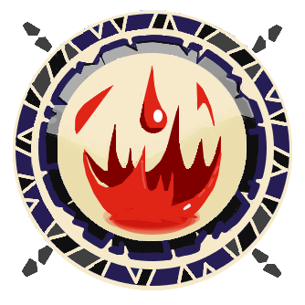

Deusa Sacrier
Sacrier é uma deusa do Mundo dos Doze, assim como o nome dado aos seu seguidores. Ela e seus discípulos servem à magia branca. Ela não estava presente quando os outros deuses descobriram o Mundo dos Dez, mas ascendeu ao Inglorium no ano 11. Com isso, o mundo foi renomeado para Mundo dos Onze.
Saiba mais